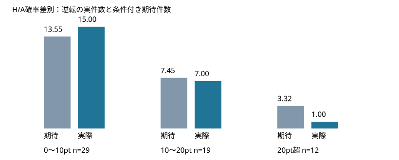

H/A決着60試合の逆転は23件。各試合のmin(PH,PA)/(PH+PA)からの期待は24.319件、試合間独立のPoisson二項95%予測範囲は17〜32件。少なくとも総数だけから逆転が想定以上とは言えない。D18試合は条件付き診断の分母からのみ除外し、購入用の確率ではDを消さない。78全体の無条件逆転期待は23.350件で、別の標本条件に対する値。
H/A差0〜10、10〜20、20ポイント超を計算前に固定。少数群は率の振れが大きく、期待逆転数との差を見る。
| dimension | group | all_matches | nonD | reversals | correct | observed_rate | expected_reversals | expected_rate | excess | count_prediction_lo | count_prediction_hi | rate_wilson_lo | rate_wilson_hi | small_sample |
|---|---|---|---|---|---|---|---|---|---|---|---|---|---|---|
| round | toto1660 | 13 | 11 | 5 | 6 | 0.45455 | 4.26916 | 0.38811 | 0.73084 | 1 | 7 | 0.21271 | 0.71991 | False |
| round | toto1663 | 13 | 10 | 2 | 8 | 0.20000 | 3.77480 | 0.37748 | -1.77480 | 1 | 7 | 0.05668 | 0.50984 | False |
| round | toto1664 | 13 | 9 | 4 | 5 | 0.44444 | 3.54955 | 0.39439 | 0.45045 | 1 | 6 | 0.18878 | 0.73335 | True |
| round | toto1665 | 13 | 9 | 3 | 6 | 0.33333 | 3.64662 | 0.40518 | -0.64662 | 1 | 7 | 0.12058 | 0.64580 | True |
| round | toto1668 | 13 | 12 | 5 | 7 | 0.41667 | 5.07068 | 0.42256 | -0.07068 | 2 | 8 | 0.19326 | 0.68049 | False |
| round | toto1670 | 13 | 9 | 4 | 5 | 0.44444 | 4.00862 | 0.44540 | -0.00862 | 1 | 7 | 0.18878 | 0.73335 | True |
| model_signature | absence_uncertainty | 26 | 21 | 8 | 13 | 0.38095 | 8.71730 | 0.41511 | -0.71730 | 4 | 13 | 0.20751 | 0.59121 | False |
| model_signature | early_score_model | 39 | 30 | 11 | 19 | 0.36667 | 11.59351 | 0.38645 | -0.59351 | 7 | 17 | 0.21874 | 0.54486 | False |
| model_signature | goal_rate_plus_style_policy | 13 | 9 | 4 | 5 | 0.44444 | 4.00862 | 0.44540 | -0.00862 | 1 | 7 | 0.18878 | 0.73335 | True |
| favorite | A | 34 | 26 | 11 | 15 | 0.42308 | 10.21183 | 0.39276 | 0.78817 | 6 | 15 | 0.25544 | 0.61051 | False |
| favorite | H | 44 | 34 | 12 | 22 | 0.35294 | 14.10760 | 0.41493 | -2.10760 | 9 | 20 | 0.21488 | 0.52086 | False |
| gap_band | 0〜10pt | 34 | 29 | 15 | 14 | 0.51724 | 13.54502 | 0.46707 | 1.45498 | 8 | 19 | 0.34431 | 0.68614 | False |
| gap_band | 10〜20pt | 28 | 19 | 7 | 12 | 0.36842 | 7.45439 | 0.39234 | -0.45439 | 3 | 12 | 0.19150 | 0.58960 | False |
| gap_band | 20pt超 | 16 | 12 | 1 | 11 | 0.08333 | 3.32002 | 0.27667 | -2.32002 | 1 | 6 | 0.01487 | 0.35388 | False |

逆転を予測失敗と一律に断定しない。qはH/A決着時の劣勢側勝率。
| round | match_no | card | score | favorite | baseline_P_H | baseline_P_D | baseline_P_A | expected_reversal | lambda_home | lambda_away | T | log_R | S | scenario_HA_flip_10pct |
|---|---|---|---|---|---|---|---|---|---|---|---|---|---|---|
| toto1660 | 3 | 福岡－岡山 | 2–1 | A | 0.29778 | 0.26833 | 0.43389 | 0.40698 | 1.09424 | 1.37953 | 2.47377 | -0.23168 | False | False |
| toto1660 | 8 | 川崎F－名古屋 | 1–2 | H | 0.48131 | 0.23566 | 0.28303 | 0.37029 | 1.73470 | 1.27928 | 3.01398 | 0.30454 | False | False |
| toto1660 | 9 | 甲府－栃木C | 2–1 | A | 0.29122 | 0.24777 | 0.46101 | 0.38714 | 1.21161 | 1.58814 | 2.79975 | -0.27061 | False | False |
| toto1660 | 11 | 徳島－今治 | 1–2 | H | 0.38078 | 0.27140 | 0.34783 | 0.47739 | 1.27234 | 1.20349 | 2.47583 | 0.05564 | False | True |
| toto1660 | 13 | いわき－秋田 | 1–0 | A | 0.33759 | 0.26262 | 0.39979 | 0.45782 | 1.23857 | 1.37164 | 2.61021 | -0.10205 | False | True |
| toto1663 | 10 | 柏－名古屋 | 1–3 | H | 0.47131 | 0.23766 | 0.29103 | 0.38176 | 1.70402 | 1.29167 | 2.99569 | 0.27705 | False | False |
| toto1663 | 11 | 札幌－秋田 | 1–0 | A | 0.33896 | 0.27395 | 0.38710 | 0.46685 | 1.16678 | 1.26665 | 2.43343 | -0.08213 | False | True |
| toto1664 | 3 | 長崎－広島 | 4–0 | A | 0.15591 | 0.21343 | 0.63066 | 0.19822 | 0.83773 | 1.93124 | 2.76897 | -0.83523 | False | False |
| toto1664 | 8 | 福岡－G大阪 | 1–2 | H | 0.39408 | 0.26113 | 0.34479 | 0.46664 | 1.37311 | 1.26716 | 2.64027 | 0.08030 | False | True |
| toto1664 | 10 | 川崎F－神戸 | 2–1 | A | 0.34133 | 0.24564 | 0.41303 | 0.45247 | 1.38203 | 1.54341 | 2.92544 | -0.11044 | False | False |
| toto1664 | 12 | 徳島－八戸 | 0–1 | H | 0.39498 | 0.27760 | 0.32741 | 0.45323 | 1.25610 | 1.11736 | 2.37346 | 0.11705 | False | False |
| toto1665 | 2 | 鹿島－柏 | 2–3 | H | 0.38750 | 0.26399 | 0.34851 | 0.47352 | 1.57772 | 1.45882 | 3.03654 | 0.07835 | False | True |
| toto1665 | 6 | 東京V－福岡 | 3–1 | A | 0.27819 | 0.29494 | 0.42687 | 0.39456 | 0.91154 | 1.30987 | 2.22141 | -0.36255 | False | False |
| toto1665 | 13 | 富山－札幌 | 0–1 | H | 0.44475 | 0.27304 | 0.28221 | 0.38821 | 1.55687 | 1.08665 | 2.64353 | 0.35958 | False | False |
| toto1668 | 7 | 千葉－福岡 | 3–0 | A | 0.32934 | 0.28006 | 0.39061 | 0.45745 | 1.21616 | 1.39096 | 2.60712 | -0.13429 | False | False |
| toto1668 | 8 | 長崎－東京V | 1–2 | H | 0.41663 | 0.28391 | 0.29946 | 0.41818 | 1.39928 | 1.07161 | 2.47090 | 0.26679 | False | False |
| toto1668 | 10 | 横浜FM－川崎F | 4–2 | A | 0.34086 | 0.26524 | 0.39391 | 0.46390 | 1.33749 | 1.47898 | 2.81647 | -0.10056 | False | True |
| toto1668 | 11 | 仙台－大宮 | 1–2 | H | 0.40219 | 0.27819 | 0.31963 | 0.44281 | 1.39350 | 1.17274 | 2.56624 | 0.17247 | False | False |
| toto1668 | 13 | 宮崎－大分 | 2–0 | A | 0.35417 | 0.29065 | 0.35518 | 0.49928 | 1.19809 | 1.20087 | 2.39896 | -0.00232 | False | True |
| toto1670 | 1 | 清水－東京V | 0–1 | H | 0.40197 | 0.29053 | 0.30750 | 0.43342 | 1.29610 | 1.04572 | 2.34182 | 0.21465 | False | False |
| toto1670 | 5 | 柏－川崎F | 2–1 | A | 0.36478 | 0.26141 | 0.37380 | 0.49389 | 1.54775 | 1.57558 | 3.12333 | -0.01782 | False | True |
| toto1670 | 6 | 名古屋－京都 | 0–2 | H | 0.39699 | 0.26715 | 0.33586 | 0.45829 | 1.44115 | 1.28503 | 2.72618 | 0.11467 | False | False |
| toto1670 | 8 | G大阪－C大阪 | 2–3 | H | 0.36513 | 0.27617 | 0.35869 | 0.49555 | 1.34054 | 1.32278 | 2.66332 | 0.01334 | False | True |
連続量7種類は全78の試合前中央値で二分、二値診断7種類を固定。閾値探索・最良条件の採択・新係数は0。Dを含む全件数とH/A決着数を分け、非逆転例も分母に残した。信頼区間はWilson、件数範囲は独立仮定による予測範囲であり、同一チーム・開催の依存を十分扱えない。
| dimension | group | all_matches | nonD | reversals | correct | observed_rate | expected_reversals | expected_rate | excess | count_prediction_lo | count_prediction_hi | rate_wilson_lo | rate_wilson_hi | small_sample |
|---|---|---|---|---|---|---|---|---|---|---|---|---|---|---|
| S | False | 70 | 58 | 23 | 35 | 0.39655 | 23.52431 | 0.40559 | -0.52431 | 16 | 31 | 0.28089 | 0.52507 | False |
| S | True | 8 | 2 | 0 | 2 | 0.00000 | 0.79512 | 0.39756 | -0.79512 | 0 | 2 | 0.00000 | 0.65762 | True |
| T | 超中央値 2.66497147 | 39 | 29 | 9 | 20 | 0.31034 | 11.00251 | 0.37940 | -2.00251 | 6 | 16 | 0.17276 | 0.49230 | False |
| T | 以下中央値 2.66497147 | 39 | 31 | 14 | 17 | 0.45161 | 13.31692 | 0.42958 | 0.68308 | 8 | 19 | 0.29162 | 0.62228 | False |
| abs_logR | 超中央値 0.22095009 | 39 | 31 | 8 | 23 | 0.25806 | 10.77441 | 0.34756 | -2.77441 | 6 | 16 | 0.13702 | 0.43246 | False |
| abs_logR | 以下中央値 0.22095009 | 39 | 29 | 15 | 14 | 0.51724 | 13.54502 | 0.46707 | 1.45498 | 8 | 19 | 0.34431 | 0.68614 | False |
| lambda_gap | 超中央値 0.28486121 | 39 | 31 | 8 | 23 | 0.25806 | 10.77441 | 0.34756 | -2.77441 | 6 | 16 | 0.13702 | 0.43246 | False |
| lambda_gap | 以下中央値 0.28486121 | 39 | 29 | 15 | 14 | 0.51724 | 13.54502 | 0.46707 | 1.45498 | 8 | 19 | 0.34431 | 0.68614 | False |
| P00 | 超中央値 0.06960146 | 39 | 31 | 14 | 17 | 0.45161 | 13.31692 | 0.42958 | 0.68308 | 8 | 19 | 0.29162 | 0.62228 | False |
| P00 | 以下中央値 0.06960146 | 39 | 29 | 9 | 20 | 0.31034 | 11.00251 | 0.37940 | -2.00251 | 6 | 16 | 0.17276 | 0.49230 | False |
| P11 | 超中央値 0.12120854 | 39 | 30 | 14 | 16 | 0.46667 | 13.26625 | 0.44221 | 0.73375 | 8 | 19 | 0.30232 | 0.63858 | False |
| P11 | 以下中央値 0.12120854 | 39 | 30 | 9 | 21 | 0.30000 | 11.05317 | 0.36844 | -2.05317 | 6 | 16 | 0.16665 | 0.47876 | False |
| P22plus | 超中央値 0.06194158 | 39 | 29 | 12 | 17 | 0.41379 | 12.45393 | 0.42945 | -0.45393 | 7 | 18 | 0.25513 | 0.59262 | False |
| P22plus | 以下中央値 0.06194158 | 39 | 31 | 11 | 20 | 0.35484 | 11.86550 | 0.38276 | -0.86550 | 7 | 17 | 0.21117 | 0.53052 | False |
| margin1 | 超中央値 0.40207583 | 39 | 28 | 14 | 14 | 0.50000 | 12.49399 | 0.44621 | 1.50601 | 7 | 18 | 0.32633 | 0.67367 | False |
| margin1 | 以下中央値 0.40207583 | 39 | 32 | 9 | 23 | 0.28125 | 11.82543 | 0.36954 | -2.82543 | 7 | 17 | 0.15565 | 0.45375 | False |
| scenario_HA_flip_10pct | False | 58 | 43 | 14 | 29 | 0.32558 | 16.17173 | 0.37609 | -2.17173 | 10 | 22 | 0.20493 | 0.47484 | False |
| scenario_HA_flip_10pct | True | 20 | 17 | 9 | 8 | 0.52941 | 8.14770 | 0.47928 | 0.85230 | 4 | 12 | 0.30963 | 0.73835 | False |
| xg_only_disagrees | False | 69 | 54 | 19 | 35 | 0.35185 | 21.43044 | 0.39686 | -2.43044 | 15 | 28 | 0.23823 | 0.48515 | False |
| xg_only_disagrees | True | 9 | 6 | 4 | 2 | 0.66667 | 2.88899 | 0.48150 | 1.11101 | 1 | 5 | 0.29999 | 0.90323 | True |
| LAB_reduces_gap | False | 25 | 22 | 8 | 14 | 0.36364 | 9.53366 | 0.43335 | -1.53366 | 5 | 14 | 0.19733 | 0.57048 | False |
| LAB_reduces_gap | True | 53 | 38 | 15 | 23 | 0.39474 | 14.78577 | 0.38910 | 0.21423 | 9 | 21 | 0.25598 | 0.55282 | False |
| absence_reduces_gap | False | 24 | 16 | 6 | 10 | 0.37500 | 6.60887 | 0.41305 | -0.60887 | 3 | 10 | 0.18481 | 0.61359 | False |
| absence_reduces_gap | True | 15 | 14 | 6 | 8 | 0.42857 | 6.11705 | 0.43693 | -0.11705 | 3 | 10 | 0.21381 | 0.67409 | False |
| favorite_more_fatigued | False | 44 | 34 | 13 | 21 | 0.38235 | 14.11193 | 0.41506 | -1.11193 | 9 | 20 | 0.23900 | 0.54959 | False |
| favorite_more_fatigued | True | 34 | 26 | 10 | 16 | 0.38462 | 10.20750 | 0.39260 | -0.20750 | 6 | 15 | 0.22429 | 0.57465 | False |
| favorite_less_rest | False | 39 | 27 | 9 | 18 | 0.33333 | 10.22611 | 0.37874 | -1.22611 | 6 | 15 | 0.18643 | 0.52175 | False |
| favorite_less_rest | True | 39 | 33 | 14 | 19 | 0.42424 | 14.09332 | 0.42707 | -0.09332 | 9 | 20 | 0.27236 | 0.59193 | False |
14項目の固定診断を記録。独立した14証拠ではなく、例えば|logR|とλ差の中央値分割は今回同じ試合群になる。実績最大化の閾値探索はしていない。
| feature | threshold_optimized | status | reason |
|---|---|---|---|
| T | False | 診断継続・新係数なし | 同じλ由来の構造・接戦確率と重複。期待逆転件数を超える独立した識別力を確認できず、補正係数を作らない。 |
| abs_logR | False | 診断継続・新係数なし | 同じλ由来の構造・接戦確率と重複。期待逆転件数を超える独立した識別力を確認できず、補正係数を作らない。 |
| lambda_gap | False | 診断継続・新係数なし | 同じλ由来の構造・接戦確率と重複。期待逆転件数を超える独立した識別力を確認できず、補正係数を作らない。 |
| P00 | False | 診断継続・新係数なし | 同じλ由来の構造・接戦確率と重複。期待逆転件数を超える独立した識別力を確認できず、補正係数を作らない。 |
| P11 | False | 診断継続・新係数なし | 同じλ由来の構造・接戦確率と重複。期待逆転件数を超える独立した識別力を確認できず、補正係数を作らない。 |
| P22plus | False | 診断継続・新係数なし | 同じλ由来の構造・接戦確率と重複。期待逆転件数を超える独立した識別力を確認できず、補正係数を作らない。 |
| margin1 | False | 診断継続・新係数なし | 同じλ由来の構造・接戦確率と重複。期待逆転件数を超える独立した識別力を確認できず、補正係数を作らない。 |
| S | False | 診断継続・新係数なし | D6/8の探索仮説を保持。H/A決着2試合しかなくH/A補正の根拠にできない。 |
| scenario_HA_flip_10pct | False | 診断継続・新係数なし | 同じλ由来の構造・接戦確率と重複。期待逆転件数を超える独立した識別力を確認できず、補正係数を作らない。 |
| xg_only_disagrees | False | 診断継続・新係数なし | 6決着中4逆転だが期待2.89、予測範囲1〜5。僅差条件と重複。後続診断候補として保持、補正は不採用。 |
| LAB_reduces_gap | False | 診断継続・新係数なし | 補正による差の縮小自体と試合の逆転原因を同一視できない。段階別確率評価を併記、後付けで処理を削除しない。 |
| absence_reduces_gap | False | 診断継続・新係数なし | 補正による差の縮小自体と試合の逆転原因を同一視できない。段階別確率評価を併記、後付けで処理を削除しない。 |
| favorite_more_fatigued | False | 診断継続・新係数なし | 保存済み方向情報として調査したが、小標本の期待件数との差から補正方向・量を確定できない。 |
| favorite_less_rest | False | 診断継続・新係数なし | 保存済み方向情報として調査したが、小標本の期待件数との差から補正方向・量を確定できない。 |
結果を使った事後ケース対照比較。各逆転例に同じモデル版・予測優勢側、q差3ポイント以内の非逆転例を最短距離で対応。対照再使用あり。この対応から予測ルールを学習していない。
| round | match_no | card | q | matched | control_round | control_no | control_card | control_q | T | control_T | P11 | control_P11 | sensitivity | control_sensitivity |
|---|---|---|---|---|---|---|---|---|---|---|---|---|---|---|
| toto1660 | 3 | 福岡－岡山 | 0.40698 | True | toto1664 | 6.00000 | 清水－町田 | 0.38137 | 2.47377 | 2.56568 | 0.12720 | 0.12380 | 0.12868 | 0.13258 |
| toto1660 | 8 | 川崎F－名古屋 | 0.37029 | True | toto1663 | 9.00000 | 町田－福岡 | 0.37779 | 3.01398 | 2.70061 | 0.10895 | 0.11979 | 0.14412 | 0.13620 |
| toto1660 | 9 | 甲府－栃木C | 0.38714 | True | toto1664 | 6.00000 | 清水－町田 | 0.38137 | 2.79975 | 2.56568 | 0.11704 | 0.12380 | 0.13826 | 0.13258 |
| toto1660 | 11 | 徳島－今治 | 0.47739 | True | toto1664 | 13.00000 | 宮崎－秋田 | 0.47691 | 2.47583 | 2.50739 | 0.12877 | 0.12796 | 0.12261 | 0.12352 |
| toto1660 | 13 | いわき－秋田 | 0.45782 | True | toto1663 | 8.00000 | 岡山－神戸 | 0.45013 | 2.61021 | 2.45756 | 0.12490 | 0.12882 | 0.12822 | 0.12483 |
| toto1663 | 10 | 柏－名古屋 | 0.38176 | True | toto1660 | 2.00000 | ＦＣ東京－浦和 | 0.38094 | 2.99569 | 2.98256 | 0.11006 | 0.11050 | 0.14326 | 0.14298 |
| toto1663 | 11 | 札幌－秋田 | 0.46685 | True | toto1663 | 8.00000 | 岡山－神戸 | 0.45013 | 2.43343 | 2.45756 | 0.12966 | 0.12882 | 0.12254 | 0.12483 |
| toto1664 | 3 | 長崎－広島 | 0.19822 | False | NaN | NaN | NaN | NaN | NaN | NaN | NaN | NaN | NaN | NaN |
| toto1664 | 8 | 福岡－G大阪 | 0.46664 | True | toto1663 | 12.00000 | 大分－新潟 | 0.46248 | 2.64027 | 2.31977 | 0.12413 | 0.13195 | 0.12815 | 0.11979 |
| toto1664 | 10 | 川崎F－神戸 | 0.45247 | True | toto1663 | 8.00000 | 岡山－神戸 | 0.45013 | 2.92544 | 2.45756 | 0.11442 | 0.12882 | 0.13681 | 0.12483 |
| toto1664 | 12 | 徳島－八戸 | 0.45323 | True | toto1664 | 7.00000 | 岡山－水戸 | 0.45043 | 2.37346 | 2.48958 | 0.13075 | 0.12805 | 0.12220 | 0.12567 |
| toto1665 | 2 | 鹿島－柏 | 0.47352 | True | toto1665 | 9.00000 | 川崎F－岡山 | 0.47922 | 3.03654 | 2.78758 | 0.11048 | 0.11949 | 0.10370 | 0.09849 |
| toto1665 | 6 | 東京V－福岡 | 0.39456 | True | toto1668 | 12.00000 | 新潟－富山 | 0.38516 | 2.22141 | 2.68260 | 0.12950 | 0.11896 | 0.09311 | 0.10249 |
| toto1665 | 13 | 富山－札幌 | 0.38821 | True | toto1665 | 12.00000 | 鳥栖－八戸 | 0.39256 | 2.64353 | 2.62117 | 0.12030 | 0.12124 | 0.10168 | 0.10114 |
| toto1668 | 7 | 千葉－福岡 | 0.45745 | False | NaN | NaN | NaN | NaN | NaN | NaN | NaN | NaN | NaN | NaN |
| toto1668 | 8 | 長崎－東京V | 0.41818 | True | toto1668 | 3.00000 | 神戸－名古屋 | 0.41733 | 2.47090 | 2.66787 | 0.12672 | 0.12178 | 0.09708 | 0.11183 |
| toto1668 | 10 | 横浜FM－川崎F | 0.46390 | False | NaN | NaN | NaN | NaN | NaN | NaN | NaN | NaN | NaN | NaN |
| toto1668 | 11 | 仙台－大宮 | 0.44281 | True | toto1665 | 10.00000 | 浦和－長崎 | 0.43949 | 2.56624 | 2.78568 | 0.12555 | 0.11864 | 0.10302 | 0.10187 |
| toto1668 | 13 | 宮崎－大分 | 0.49928 | False | NaN | NaN | NaN | NaN | NaN | NaN | NaN | NaN | NaN | NaN |
| toto1670 | 1 | 清水－東京V | 0.43342 | True | toto1670 | 4.00000 | FC東京－鹿島 | 0.41345 | 2.34182 | 2.83034 | 0.13032 | 0.11646 | 0.09608 | 0.11643 |
| toto1670 | 5 | 柏－川崎F | 0.49389 | False | NaN | NaN | NaN | NaN | NaN | NaN | NaN | NaN | NaN | NaN |
| toto1670 | 6 | 名古屋－京都 | 0.45829 | False | NaN | NaN | NaN | NaN | NaN | NaN | NaN | NaN | NaN | NaN |
| toto1670 | 8 | G大阪－C大阪 | 0.49555 | False | NaN | NaN | NaN | NaN | NaN | NaN | NaN | NaN | NaN | NaN |
攻撃は得点率とxG率の50/50、守備は失点率とxGA率の50/50。その積の平方根が基礎λ。xG率の試合数は累積xGA/試合平均xGAを丸めて推定しており、保存入力から再現できるが分母・集計期間の品質は独立の監査対象。LABのxG対戦値を対数空間25%で混合し、欠場の攻守影響を加算。保存原本78件の基礎λと最終HDAを再現した。
| card | score | home_attack | away_attack | home_defense | away_defense | home_xgpg | away_xgpg | home_xgapg | away_xgapg | base_lambda_home | base_lambda_away | lab_final_lambda_home | lab_final_lambda_away | absence_lambda_delta_home | absence_lambda_delta_away | lambda_home | lambda_away |
|---|---|---|---|---|---|---|---|---|---|---|---|---|---|---|---|---|---|
| 鹿島－柏 | 2–3 | 1.89545 | 1.69167 | 1.35000 | 1.35000 | 1.69091 | 1.38333 | 1.10000 | 1.20000 | 1.59964 | 1.51121 | 1.56660 | 1.45882 | 0.01111 | 0.00000 | 1.57772 | 1.45882 |
| 東京V－福岡 | 3–1 | 0.63636 | 1.07500 | 1.75000 | 1.40000 | 0.77273 | 1.05000 | 1.70000 | 1.20000 | 0.94388 | 1.37159 | 0.96679 | 1.38409 | -0.05525 | -0.07422 | 0.91154 | 1.30987 |
| 富山－札幌 | 0–1 | 1.88333 | 1.13846 | 1.00000 | 1.45000 | 1.86667 | 0.97692 | 1.10000 | 1.30000 | 1.65252 | 1.06699 | 1.64091 | 1.07103 | -0.08404 | 0.01562 | 1.55687 | 1.08665 |
基礎λ1.600対1.511と僅差。LAB後1.567対1.459、欠場補正はH+0.011で最終1.578対1.459。A34.85%は十分な事前可能性を残していた。Aの欠落はPhase3.7の10口選択の機会損失でもあり、この1結果でH優勢予測そのものを誤設計とは判定できない。
基礎攻撃率0.636対1.075、東京V守備側失点期待1.750・福岡1.400がA優勢を作った。LAB後のHは0.967へ上がり、欠場補正も相対差を縮めるが最終0.912対1.310。保存疲労値は東京V2.70・福岡12.67でHを相対的に支持し得る材料。ただし既存mixは一様化で方向を変えず、疲労値差を勝者補正へ使う妥当性は別途必要。得点/xG自体からH優勢を裏付ける入力はこの式には見られない。
基礎攻撃率1.883対1.138、富山守備1.000・札幌1.450がH優勢を作った。LABはほぼ同方向、欠場はH−0.084・A+0.016で差を縮めたが最終1.557対1.087。札幌側の疲労値15.85は富山4.00より高く、東京Vの説明をそのまま使うとこちらのA勝利は説明できない。元のA28.22%もゼロではない。
保存された旧prob_*・Elo/LAB混合予測は使用しない。Nextの式に入る得失点率・xG/xGA・LAB xG・欠場と、保存だけされている情報を区別。fatigue/weatherはmix、独立したhome advantage項・対戦相手の過去日程強度補正は今回確認したNext式にはない。相手の守備力は平方根積に入る。直近個別試合の退場などは再取得せず未取得として扱う。1670のstyleはno_prematch_archivesでλ差分0、得失点外れ値補正のみ保存差分で比較可能。
| field | available | total |
|---|---|---|
| absence_input_missing_away | 39 | 78 |
| absence_input_missing_home | 39 | 78 |
| absence_lambda_delta_away | 39 | 78 |
| absence_lambda_delta_home | 39 | 78 |
| away_fatigue_score | 78 | 78 |
| away_rest_hours | 78 | 78 |
| base_lambda_away | 78 | 78 |
| base_lambda_home | 78 | 78 |
| base_lambda_reason | 78 | 78 |
| flab_expected_against_xg_away | 78 | 78 |
| flab_expected_against_xg_home | 78 | 78 |
| flab_expected_for_xg_away | 78 | 78 |
| flab_expected_for_xg_home | 78 | 78 |
| flab_snapshot_date | 78 | 78 |
| goal_rate_adjustment_version | 13 | 78 |
| home_fatigue_score | 78 | 78 |
| home_rest_hours | 78 | 78 |
| lab_adjustment_reason | 78 | 78 |
| lab_final_lambda_away | 39 | 78 |
| lab_final_lambda_home | 39 | 78 |
| lab_matchup_lambda_away | 78 | 78 |
| lab_matchup_lambda_home | 78 | 78 |
| stats_1試合平均失点数_away | 78 | 78 |
| stats_1試合平均失点数_home | 78 | 78 |
| stats_1試合平均得点数_away | 78 | 78 |
| stats_1試合平均得点数_home | 78 | 78 |
| stats_1試合平均被ゴール期待値_away | 78 | 78 |
| stats_1試合平均被ゴール期待値_home | 78 | 78 |
| stats_asof | 78 | 78 |
| stats_ゴール期待値_away | 78 | 78 |
| stats_ゴール期待値_home | 78 | 78 |
| stats_被ゴール期待値_away | 78 | 78 |
| stats_被ゴール期待値_home | 78 | 78 |
| style_lambda_delta_away | 13 | 78 |
| style_lambda_delta_home | 13 | 78 |
| style_official_status | 13 | 78 |
保存λから再集計した既存段階の診断。現在のチーム履歴で再計算していない。各段階と同じ試合集合のfinalを比較し、モデル版も分けた。途中段階の成績が良くても、この78試合だけを理由に補正を削除する指示にはしない。
| stage | n | log_loss | brier | goal_nll | same_rows_final_log_loss | delta_log_loss_vs_final | delta_brier_vs_final |
|---|---|---|---|---|---|---|---|
| LAB後 | 78 | 1.02700 | 0.61559 | 3.01163 | 1.02948 | -0.00249 | -0.00195 |
| final | 78 | 1.02948 | 0.61754 | 3.00618 | 1.02948 | 0.00000 | 0.00000 |
| 保存差分から外れ値補正前を復元 | 13 | 1.05731 | 0.63617 | 2.52757 | 1.06414 | -0.00684 | -0.00606 |
| 基礎λ | 78 | 1.02773 | 0.61641 | 3.01182 | 1.02948 | -0.00175 | -0.00112 |
| 最終λ・mix前 | 78 | 1.02440 | 0.61389 | 3.00618 | 1.02948 | -0.00509 | -0.00365 |
保存された得失点率を基礎入力とし、今回最新の履歴へ差し替えていない。1670の外れ値処理は、過去各試合時点の自チーム・相手の成績から突出得点を判定し、重みを0.5〜1に抑える既存方式。現行コードの補正差は過去全件の加重平均−通常平均を公開率に加える形で、単純な直近5試合の指数減衰ではない。今回その計算を履歴から再実行せず、保存済み最終λ差分だけで補正前を復元した。以前の開催へ現在の補正を遡及適用していない。
λ補正の前後はともにmix前で比較し、mixの効果は別の行とする。外れ値補正前の復元は保存差分のある1670だけ。これらは既存処理の診断で、新規に修正量を学習したものではない。
| before | after | round | n | log_loss_before | log_loss_after | delta_log_loss | delta_brier | delta_goal_nll | HA_favorite_changes |
|---|---|---|---|---|---|---|---|---|---|
| 基礎λ | LAB後 | 全体 | 78 | 1.02773 | 1.02700 | -0.00074 | -0.00083 | -0.00020 | 1 |
| 基礎λ | LAB後 | toto1660 | 13 | 1.01879 | 1.00376 | -0.01503 | -0.01098 | -0.00941 | 0 |
| 基礎λ | LAB後 | toto1663 | 13 | 0.95339 | 0.95313 | -0.00026 | -0.00111 | -0.01554 | 0 |
| 基礎λ | LAB後 | toto1664 | 13 | 1.13502 | 1.12940 | -0.00562 | -0.00431 | -0.00197 | 0 |
| 基礎λ | LAB後 | toto1665 | 13 | 1.05558 | 1.05615 | 0.00057 | 0.00017 | -0.00113 | 0 |
| 基礎λ | LAB後 | toto1668 | 13 | 0.94803 | 0.95409 | 0.00605 | 0.00402 | 0.01911 | 0 |
| 基礎λ | LAB後 | toto1670 | 13 | 1.05557 | 1.06545 | 0.00988 | 0.00725 | 0.00776 | 1 |
| LAB後 | 最終λ・mix前 | 全体 | 78 | 1.02700 | 1.02440 | -0.00260 | -0.00170 | -0.00545 | 0 |
| LAB後 | 最終λ・mix前 | toto1660 | 13 | 1.00376 | 1.00376 | 0.00000 | 0.00000 | 0.00000 | 0 |
| LAB後 | 最終λ・mix前 | toto1663 | 13 | 0.95313 | 0.95313 | 0.00000 | 0.00000 | 0.00000 | 0 |
| LAB後 | 最終λ・mix前 | toto1664 | 13 | 1.12940 | 1.12940 | 0.00000 | 0.00000 | 0.00000 | 0 |
| LAB後 | 最終λ・mix前 | toto1665 | 13 | 1.05615 | 1.04818 | -0.00797 | -0.00534 | -0.01299 | 0 |
| LAB後 | 最終λ・mix前 | toto1668 | 13 | 0.95409 | 0.95152 | -0.00257 | -0.00096 | -0.01187 | 0 |
| LAB後 | 最終λ・mix前 | toto1670 | 13 | 1.06545 | 1.06040 | -0.00505 | -0.00391 | -0.00783 | 0 |
| 最終λ・mix前 | final | 全体 | 78 | 1.02440 | 1.02948 | 0.00509 | 0.00365 | 0.00000 | 0 |
| 最終λ・mix前 | final | toto1660 | 13 | 1.00376 | 1.00376 | 0.00000 | -0.00000 | 0.00000 | 0 |
| 最終λ・mix前 | final | toto1663 | 13 | 0.95313 | 0.95313 | 0.00000 | 0.00000 | 0.00000 | 0 |
| 最終λ・mix前 | final | toto1664 | 13 | 1.12940 | 1.12940 | 0.00000 | 0.00000 | 0.00000 | 0 |
| 最終λ・mix前 | final | toto1665 | 13 | 1.04818 | 1.05150 | 0.00332 | 0.00411 | 0.00000 | 0 |
| 最終λ・mix前 | final | toto1668 | 13 | 0.95152 | 0.97497 | 0.02345 | 0.01454 | 0.00000 | 0 |
| 最終λ・mix前 | final | toto1670 | 13 | 1.06040 | 1.06414 | 0.00374 | 0.00326 | 0.00000 | 0 |
| 保存差分から外れ値補正前を復元 | 最終λ・mix前 | 全体 | 13 | 1.05731 | 1.06040 | 0.00309 | 0.00280 | -0.01042 | 1 |
| 保存差分から外れ値補正前を復元 | 最終λ・mix前 | toto1670 | 13 | 1.05731 | 1.06040 | 0.00309 | 0.00280 | -0.01042 | 1 |
異なるモデル版の差を補正の因果効果と混同しない。
| model_signature | stage | n | log_loss | brier | goal_nll |
|---|---|---|---|---|---|
| absence_uncertainty | LAB後 | 26 | 1.00512 | 0.60049 | 3.22356 |
| absence_uncertainty | final | 26 | 1.01323 | 0.60666 | 3.21113 |
| absence_uncertainty | 基礎λ | 26 | 1.00181 | 0.59839 | 3.21457 |
| absence_uncertainty | 最終λ・mix前 | 26 | 0.99985 | 0.59734 | 3.21113 |
| early_score_model | LAB後 | 39 | 1.02876 | 0.61656 | 3.03255 |
| early_score_model | final | 39 | 1.02876 | 0.61656 | 3.03255 |
| early_score_model | 基礎λ | 39 | 1.03573 | 0.62202 | 3.04153 |
| early_score_model | 最終λ・mix前 | 39 | 1.02876 | 0.61656 | 3.03255 |
| goal_rate_plus_style_policy | LAB後 | 13 | 1.06545 | 0.64288 | 2.52499 |
| goal_rate_plus_style_policy | final | 13 | 1.06414 | 0.64223 | 2.51715 |
| goal_rate_plus_style_policy | 保存差分から外れ値補正前を復元 | 13 | 1.05731 | 0.63617 | 2.52757 |
| goal_rate_plus_style_policy | 基礎λ | 13 | 1.05557 | 0.63563 | 2.51722 |
| goal_rate_plus_style_policy | 最終λ・mix前 | 13 | 1.06040 | 0.63897 | 2.51715 |
Brierは3カテゴリの二乗誤差の和、Log Lossは自然対数。最高確率一致率とは別の指標。
| group | n | log_loss | brier | top_accuracy |
|---|---|---|---|---|
| 全体 | 78 | 1.02948 | 0.61754 | 0.47436 |
| S=False | 70 | 1.01071 | 0.60547 | 0.50000 |
| S=True | 8 | 1.19373 | 0.72315 | 0.25000 |
| 版:absence_uncertainty | 26 | 1.01323 | 0.60666 | 0.50000 |
| 版:early_score_model | 39 | 1.02876 | 0.61656 | 0.48718 |
| 版:goal_rate_plus_style_policy | 13 | 1.06414 | 0.64223 | 0.38462 |
確率帯は固定の3区分。小標本帯の過度な解釈を避ける。
| group | symbol | band | n | expected_count | actual_count | mean_probability | actual_rate | wilson_lo | wilson_hi | count_prediction_lo | count_prediction_hi | small_sample |
|---|---|---|---|---|---|---|---|---|---|---|---|---|
| 全体 | H | 全域 | 78 | 28.91012 | 33 | 0.37064 | 0.42308 | 0.31959 | 0.53378 | 21 | 37 | False |
| 全体 | D | 全域 | 78 | 20.50582 | 18 | 0.26290 | 0.23077 | 0.15126 | 0.33556 | 13 | 28 | False |
| 全体 | A | 全域 | 78 | 28.58406 | 27 | 0.36646 | 0.34615 | 0.25005 | 0.45670 | 21 | 37 | False |
| S=False | H | 全域 | 70 | 25.80955 | 31 | 0.36871 | 0.44286 | 0.33250 | 0.55916 | 18 | 34 | False |
| S=False | D | 全域 | 70 | 18.38323 | 12 | 0.26262 | 0.17143 | 0.10088 | 0.27617 | 11 | 26 | False |
| S=False | A | 全域 | 70 | 25.80722 | 27 | 0.36867 | 0.38571 | 0.28048 | 0.50284 | 18 | 34 | False |
| S=True | H | 全域 | 8 | 3.10057 | 2 | 0.38757 | 0.25000 | 0.07148 | 0.59072 | 1 | 6 | True |
| S=True | D | 全域 | 8 | 2.12259 | 6 | 0.26532 | 0.75000 | 0.40928 | 0.92852 | 0 | 5 | True |
| S=True | A | 全域 | 8 | 2.77684 | 0 | 0.34710 | 0.00000 | 0.00000 | 0.32441 | 0 | 5 | True |
| 版:absence_uncertainty | H | 全域 | 26 | 9.84235 | 14 | 0.37855 | 0.53846 | 0.35458 | 0.71244 | 5 | 15 | False |
| 版:absence_uncertainty | D | 全域 | 26 | 7.05358 | 5 | 0.27129 | 0.19231 | 0.08507 | 0.37876 | 3 | 12 | False |
| 版:absence_uncertainty | A | 全域 | 26 | 9.10407 | 7 | 0.35016 | 0.26923 | 0.13704 | 0.46083 | 5 | 14 | False |
| 版:early_score_model | H | 全域 | 39 | 14.29542 | 16 | 0.36655 | 0.41026 | 0.27079 | 0.56581 | 9 | 20 | False |
| 版:early_score_model | D | 全域 | 39 | 9.82717 | 9 | 0.25198 | 0.23077 | 0.12646 | 0.38336 | 5 | 15 | False |
| 版:early_score_model | A | 全域 | 39 | 14.87741 | 14 | 0.38147 | 0.35897 | 0.22742 | 0.51582 | 9 | 21 | False |
| 版:goal_rate_plus_style_policy | H | 全域 | 13 | 4.77235 | 3 | 0.36710 | 0.23077 | 0.08180 | 0.50256 | 2 | 8 | False |
| 版:goal_rate_plus_style_policy | D | 全域 | 13 | 3.62507 | 4 | 0.27885 | 0.30769 | 0.12681 | 0.57631 | 1 | 7 | False |
| 版:goal_rate_plus_style_policy | A | 全域 | 13 | 4.60258 | 6 | 0.35404 | 0.46154 | 0.23206 | 0.70856 | 1 | 8 | False |
実得点−λは残差。Poisson比率区間はλを既知offsetとする独立Poisson仮定の診断に限り、真のλ誤差区間ではない。Pearson二乗残差やH/A残差共分散には平均の偏り・未観測要因・得点の依存も含まれ、それだけから潜在λの分散・相関を同定できない。
| group | side | n | predicted_goals | actual_goals | mean_residual | actual_to_expected | poisson_ratio_ci_lo | poisson_ratio_ci_hi | pearson_mean | excess_second_moment | total_residual_mean | difference_residual_mean | residual_covariance |
|---|---|---|---|---|---|---|---|---|---|---|---|---|---|
| 全体 | H | 78 | 104.43323 | 122 | 0.22521 | 1.16821 | 0.97013 | 1.39484 | 1.25600 | 0.30864 | 0.14547 | 0.30496 | -0.19296 |
| 全体 | A | 78 | 103.21998 | 97 | -0.07974 | 0.93974 | 0.76207 | 1.14640 | 0.96073 | -0.00995 | 0.14547 | 0.30496 | -0.19296 |
| 開催:toto1660 | H | 13 | 16.04755 | 13 | -0.23443 | 0.81009 | 0.43134 | 1.38528 | 0.53153 | -0.59527 | -0.68467 | 0.21582 | -0.07338 |
| 開催:toto1660 | A | 13 | 18.85315 | 13 | -0.45024 | 0.68954 | 0.36715 | 1.17913 | 0.58494 | -0.64927 | -0.68467 | 0.21582 | -0.07338 |
| 開催:toto1663 | H | 13 | 17.90015 | 22 | 0.31537 | 1.22904 | 0.77023 | 1.86078 | 1.60586 | 0.66758 | 0.62676 | 0.00399 | -0.16469 |
| 開催:toto1663 | A | 13 | 16.95198 | 21 | 0.31139 | 1.23879 | 0.76683 | 1.89363 | 1.56935 | 0.87581 | 0.62676 | 0.00399 | -0.16469 |
| 開催:toto1664 | H | 13 | 17.62972 | 22 | 0.33618 | 1.24789 | 0.78205 | 1.88932 | 1.54345 | 0.30593 | 0.40833 | 0.26402 | -0.63463 |
| 開催:toto1664 | A | 13 | 17.06202 | 18 | 0.07215 | 1.05497 | 0.62524 | 1.66732 | 1.20219 | 0.38567 | 0.40833 | 0.26402 | -0.63463 |
| 開催:toto1665 | H | 13 | 18.58321 | 26 | 0.57052 | 1.39911 | 0.91395 | 2.05002 | 1.73362 | 1.17086 | 0.17386 | 0.96719 | 0.04961 |
| 開催:toto1665 | A | 13 | 16.15664 | 11 | -0.39666 | 0.68083 | 0.33987 | 1.21820 | 0.74415 | -0.30814 | 0.17386 | 0.96719 | 0.04961 |
| 開催:toto1668 | H | 13 | 17.31010 | 26 | 0.66845 | 1.50201 | 0.98116 | 2.20080 | 1.66808 | 1.02850 | 0.69716 | 0.63975 | -0.72844 |
| 開催:toto1668 | A | 13 | 17.62683 | 18 | 0.02871 | 1.02117 | 0.60521 | 1.61389 | 1.06286 | 0.13611 | 0.69716 | 0.63975 | -0.72844 |
| 開催:toto1670 | H | 13 | 16.96250 | 13 | -0.30481 | 0.76640 | 0.40807 | 1.31056 | 0.45348 | -0.72575 | -0.34860 | -0.26101 | 0.15957 |
| 開催:toto1670 | A | 13 | 16.56936 | 16 | -0.04380 | 0.96564 | 0.55195 | 1.56814 | 0.60090 | -0.49988 | -0.34860 | -0.26101 | 0.15957 |
| 版:absence_uncertainty | H | 26 | 35.89331 | 52 | 0.61949 | 1.44874 | 1.08199 | 1.89983 | 1.70085 | 1.09968 | 0.43551 | 0.80347 | -0.31501 |
| 版:absence_uncertainty | A | 26 | 33.78347 | 29 | -0.18398 | 0.85841 | 0.57489 | 1.23282 | 0.90350 | -0.08601 | 0.43551 | 0.80347 | -0.31501 |
| 版:early_score_model | H | 39 | 51.57742 | 57 | 0.13904 | 1.10513 | 0.83702 | 1.43183 | 1.22695 | 0.12608 | 0.11681 | 0.16127 | -0.19441 |
| 版:early_score_model | A | 39 | 52.86715 | 52 | -0.02223 | 0.98360 | 0.73460 | 1.28986 | 1.11883 | 0.20407 | 0.11681 | 0.16127 | -0.19441 |
| 版:goal_rate_plus_style_policy | H | 13 | 16.96250 | 13 | -0.30481 | 0.76640 | 0.40807 | 1.31056 | 0.45348 | -0.72575 | -0.34860 | -0.26101 | 0.15957 |
| 版:goal_rate_plus_style_policy | A | 13 | 16.56936 | 16 | -0.04380 | 0.96564 | 0.55195 | 1.56814 | 0.60090 | -0.49988 | -0.34860 | -0.26101 | 0.15957 |
| S=False | H | 70 | 93.33468 | 108 | 0.20950 | 1.15713 | 0.94921 | 1.39704 | 1.31082 | 0.37430 | 0.14034 | 0.27867 | -0.26851 |
| S=False | A | 70 | 92.84171 | 88 | -0.06917 | 0.94785 | 0.76020 | 1.16778 | 0.98867 | 0.03089 | 0.14034 | 0.27867 | -0.26851 |
| S=True | H | 8 | 11.09856 | 14 | 0.36268 | 1.26143 | 0.68963 | 2.11646 | 0.77635 | -0.26586 | 0.19040 | 0.53496 | 0.54046 |
| S=True | A | 8 | 10.37827 | 9 | -0.17228 | 0.86720 | 0.39654 | 1.64621 | 0.71624 | -0.36730 | 0.19040 | 0.53496 | 0.54046 |
S8試合はD6、残るH決着2試合はいずれもH優勢予測どおり。H/A決着に限ると標本は2件で、SがH/A逆転を見分けると結論できない。S・T・logRは同じλ由来の情報で、独立証拠として加算しない。相対λ変動ではH/D/Aを得点行列から同時に再計算する必要があり、Phase3.5の全25状態をsensitivity_HDA.csvに保存した。これらは仮定上の反応で現実の誤差分布ではない。
xGだけの対戦期待値とfinal優勢側が食い違う9試合のうちH/A決着は6、逆転4（期待2.89）。徳島－今治・いわき－秋田・札幌－秋田・宮崎－大分は逆転したが、柏－浦和・京都－清水はfinal側が勝った。元々q≈0.48の僅差群であり、別の識別情報と確認できない。±10%試験で優勢反転する群は17決着中9逆転（期待8.15）、しない群は43中14（期待16.17）。接戦の表現として有用でも、期待以上の識別力の証明にはならない。
ホーム得点は予測104.43に対し実122、アウェーは103.22に対し97。特に1665・1668の26試合でH予測35.89対実52だが、1670ではH予測16.96対実13と逆方向。明示的ホーム有利項がない計算構造と合わせて監査候補になるが、ホームλを一律増やす係数の根拠にはまだ不足。得点のPoisson偶然性を除いた潜在λ誤差の分散・相関は、この少数の集計残差から一意に決まらない。
優勢側の疲労が高い群は26決着中10逆転（期待10.21）、それ以外は34中13（期待14.11）。今回の単純な方向比較では期待以上の逆転増は確認できない。東京V－福岡の疲労差だけを根拠にHへ補正する案は採用しない。
保存mixは全HDAを一様分布へ近づけ、PH−PAを(1−mix)倍する。mix<1ならH/A首位は変わらない。λに方向補正を加える場合にはraw H/D/Aを同じ得点分布から再計算し、mixとの役割を分ける。今回の原本ではこの関係とHDA合計1を確認した。
逆転総数はモデル期待から逸脱しておらず、条件ごとの違いは小標本・版・ホーム側傾向と重なる。入力に改善を調べる余地はあるが、この結果から修正方向・適用条件・修正量を一貫して確定する根拠は不足。新しいH/A係数、Sの75%置換、修正後10口は作らない。これは現在の予測が完全であるという結論ではない。保存原本と固定指標による後続検証を先に行う。
未使用の完成済み試合前予測はレジストリでは確認できない。future_validation.jsonに指標・区間・S・評価方法を固定。各モデル版で、ホーム側の校正、疲労差の方向情報、xG分母と集計期間、欠場の実測品質を確認する。修正を試す場合は後続未使用期間でLog Loss/Brierを評価し、HDA合計1を保った分布を作ってから10口へ接続する。H/A変動を導入した状態では、Phase3.7のD配置別圧縮は再証明が必要。